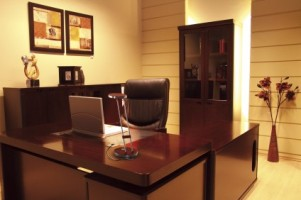
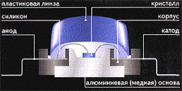
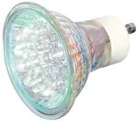
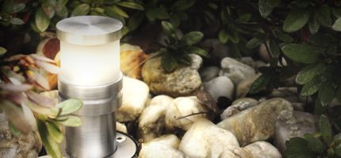
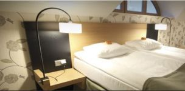
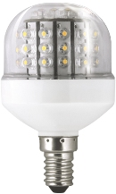

Что такое светодиоды


В связи с постоянным повышением цен на энергоносители и топливо всеми движет бум энергосбережения и энергоэффективности, по этой причине мы проанализировали какие шаги и методы может предпринять обычный обыватель в своем доме и начали рассматривать эти вопросы в предыдущих статьях по целесообразности использования в вашем доме солнечных батарей(коллекторов) и энергосберегающих окон, а сегодня рассмотрим возможности использования и преимущества наиболее экономичных и энергосберегающих ламп.Всего лишь несколько лет назад не было оснований для серьезного разговора о полноценном светодиодном освещении, технологии были не так развиты и светодиоды использовали только в качестве подсветки и контурного освещения. Но все развивается и сегодня технологии использования светодиодов показывают эффективность до 150 люменов на 1 ватт энергопотребления. Если говорить просто, то это значит, что с помощью светодиодов получили самое экономичное освещение.
Что такое светодиоды?Светодиод — это прибор, с использованием полупроводника, который преобразует электрический ток в световое излучение. Этот прибор также известен под названием LED, т.е. light emitting diode – свет излучающего диода.

Как вы заметили, в последнее время светодиодное освещение стало очень популярным. Не удивительно, так как светодиодные лампы и светильники имеют ряд преимуществ, такие как:
- низкое энергопотребление – световая отдача светодиодных ламп мощностью 10-15 Вт сравнима с световой отдачей ламп накаливания мощностью 75-100 Вт. Таким образом, КПД светодиодной лампы до 10 раз выше обычной лампы накаливания;
- высокая светоотдача (яркость) – в 130-150 люменов на 1 ватт энергопотребления;
- реальная цветопередача - освещение очень близкое к дневному дает возможность видеть действительные цвета предметов;
- длительный срок эксплуатации - до 10 лет беспрерывной
работы. Однако, есть закономерность - чем мощнее светодиод, тем
быстрее наступает старение, т.к. больший ток дает боль шую температуру
светодиода, что приводит к старению. Поэтому срок эксплуатации мощных
светодиодов короче, чем у маломощных. Старение выражается в падающем
уровне яркости. Если яркость снизилась на 30%-50%, значит, светодиод
необходимо менять;

- надежность – лампы обладают виброустойчивостью и ударопрочностью, поэтому освещение стабильно при механических воздействиях, вольфрамовые нити не используются;
- экологическая безопасность - отсутствует ультрафиолетовое и радиоактивное излучение, не содержат токсичных веществ(ртути) и нет необходимости в специальной утилизации;
- низкое тепловыделение – освещаемые предметы не нагреваются и не создается духота в помещении;
- температурн ый режим работы – могут эксплуатироваться в любых погодных условиях при температуре от – 40?С до + 50?С;
- устойчивость к многократным включениям и выключениям;
- отсутствие мерцания и пульсации – безвредны для глаз;
- равномерность свечения - отсутствие темных или светлых пятен, полос;
- безопасность – так как применяется низкий вольтаж (12 вольт);
- компактные размеры, а кроме того, удобство, эргономичность и эстетичность;
- разнообразная цветовая гамма свечения;
- простота в обслуживании и установке.

Вы можете применить светодиодные лампы для:
- освещения интерьеров, в т.ч. как подсветку подвесного потолка, разных уровней пола и мебели;
- наружной подсветки ландшафтного дизайна;
- освещения офиса и витрин;
- подсветки зданий для подчеркивания архитектурного оформления;
- новогодних гирлянд;
- освещения рекламных площадок;
- улично-паркового освещения и др.
Использование светодиодных ламп является самым экономичным светотехническим решением в таких сферах как:
- бизнес центры и торгово-развлекательные комплексы;
- гостиничный и ресторанный бизнес;
- различные направления сферы обслуживания;
- ЖКХ и собственные домовладения.

Перспективы внедрения энергосберегающих технологийВ ЕС оборот традиционных ламп накаливания мощностью 100 ватт запрещен с сентября 2009 года, а 75 ватт – с сентября 2010-го. В сентябре 2011 года будет введен запрет на оборот 60-ваттных. В России также уже внедрено это нововведение - введен запрет на оборот ламп накаливания мощностью 100 ватт и более, а с 2016 года – запрещено производство и продажа ламп накаливания мощностью 75 ватт и более, а с 2016 года - мощностью 25 ватт согласно Федерального Закона «Об энергосбережении и повышении энергоэффективности» от ноября 2009 года. Весь мир глобально переходит на люминесцентные энергосберегающие лампы.
Но внутри люминесцентных энергосберегающих ламп содержится ртуть, которая вредна для здоровья человека, и при окончании эксплуатации ее нельзя просто выбросить в мусоропровод, а необходимо подвергнуть специальной утилизации. Так например, если энергосберегающую лампу по неосторожности разбить, то концентрация ртути в помещении в 20 раз будет превышена.
В связи с этим, люминесцентные энергосберегающие лампы - это не лучшее решение для нас и нужен переход на новые более экологически безопасные технологии, например на светодиодные лампы и светильники, к тому же стоимость светодиодов при масштабном потреблении в течение пяти лет может снизиться более чем в четыре раза.

Наверное, вы уже не раз задумывались о минимизации потребления электроэнергии в вашем доме, и о том как сделать свой дом действительно энергосберегающим и энергоэффективным, а, возможно, даже мечтаете воспользоваться альтернативными источниками энергии, например энергией солнца.
В первую очередь, для повышения энергосбережения вашего жилища проанализируйте потери тепла в вашем доме.
Удачи вам в стремлении сделать личное жилище энергоэффективным и энергосберегающим!